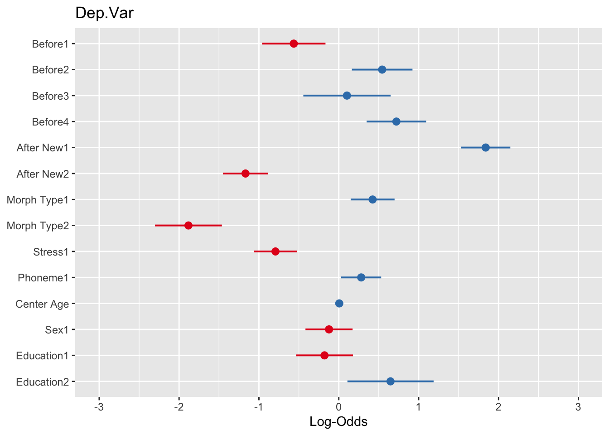
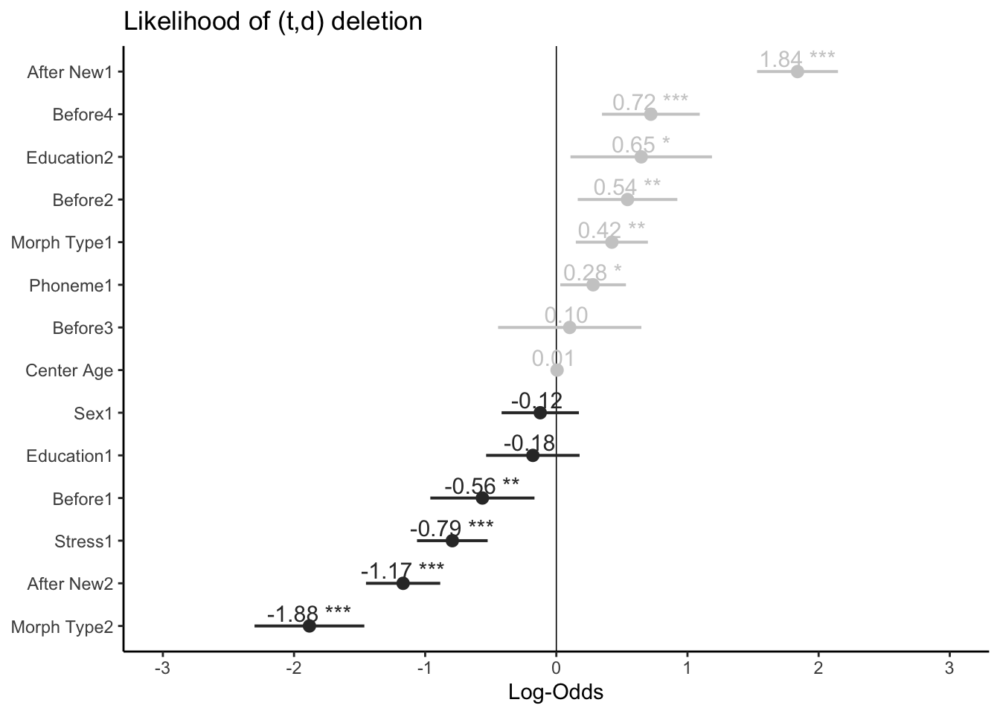
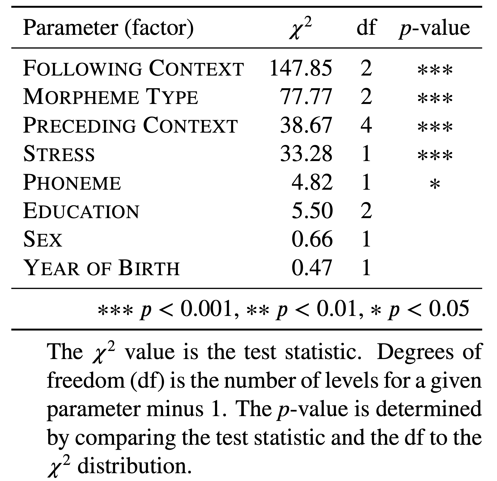
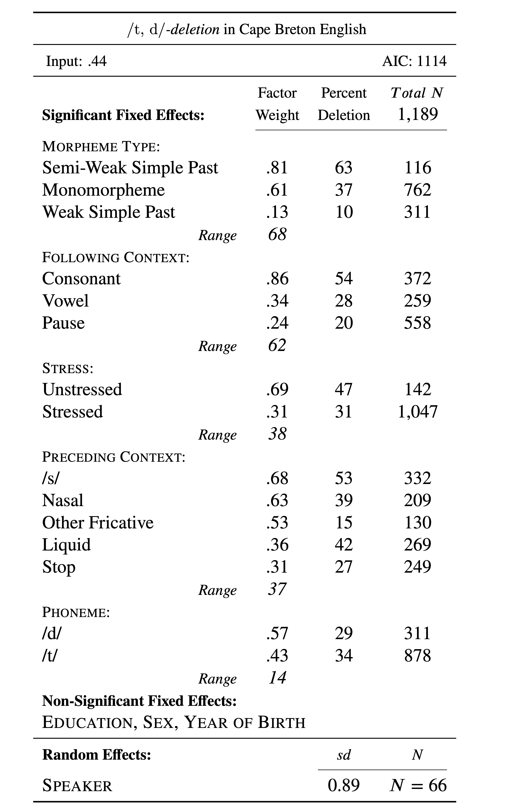

# Sum Coding (vs. mean)
options(contrasts = c("contr.sum", "contr.poly"))Mixed-Efects Logistic Regression Analysis: Part 2
Doing a mixed-effects logistic regression analysis suitable for comparing to a Goldvarb analysis. Part 2: Sum Contrast Coding
Matt Hunt Gardner ![]()
Sum Contrasts (vs. mean)
Before you proceed with this section, please make sure that you have your data loaded and modified based on the code here and that Dep.Var is re-coded such that Deletion is the second factor. Next, you set the global R options to employ sum contrast coding. Now you are ready to create a mixed-effects logistic regression model that is comparable to the model produced by Goldvarb.
Building Your Model
The next step is creating the mixed-effects model. The following code tests the fixed effects of preceding phonological context (Before), following phonological context (After.New1), morphological status (Morph.Type), lexical stress of the syllable (Stress), underlying phoneme (Phoneme), speaker age (Centre.Age), speaker sex (Sex) and speaker education level (Education2), on the deletion of (t ,d) in the data set. It also takes into account the potential random effect of speaker (Speaker3). The function for creating this model, glmer() (for Generalized Linear Mixed Effects model with Random effects, what I call the “glimmer” [glɪmɚ] function) is part of the lme4 package.
# Generalized linear mixed effects model with the fixed main effects of Before,
# After.New, Morph.Type, Stress, Phoneme, Centre.Age, Sex and Education, and
# the random effect of Speaker
library(lme4)
td.glmer <- glmer(Dep.Var ~ Before + After.New + Morph.Type + Stress + Phoneme +
Center.Age + Sex + Education + (1 | Speaker), data = td, family = "binomial",
control = glmerControl(optCtrl = list(maxfun = 20000), optimizer = "bobyqa"))As with the ctree() function, you construct your gmler() model by first specifying the dependent variable, here Dep.Var, then using ~ to indicate that everything to the right is a potential predictor of your dependent variable (e.g., the variable on the left varies as a function of the variables on the right). The predictors are separated by a +. You specify that Speaker is a random effect by enclosing it in (1| ). Here the 1 simply indicates the model’s intercept. You are essentially telling R to assume a different intercept (i.e., baseline likelihood of Deletion) for each level of Speaker. This effectively resolves the non-independence that stems from having multiple tokens by the same speaker. If you wanted to include both speaker and word as random effects, assuming you had columns called Speaker and Word, you could specify + (1|Speaker) + (1|Word) in your function. If you do not want any random effects in your model, you cannot use glmer(). Instead, you must use glme().
After specifying your predictors, you indicate that family = "binomial" because you are looking at the binary choice between Deletion and Realization. The specification control = glmerControl(optCtrl = list(maxfun = 2e4), optimizer = "bobyqa") simply tweaks how many function evaluations the glmer() optimizer will try before giving up and declaring non-convergence with an error message. You don’t need to use these specifications. If you don’t, you may get non-convergence warnings — but even if you do, that isn’t necessarily the end of the world. As long as the reason you’re getting the the non-convergence warnings is NOT because of singletons or knockouts in some cells (as a good sociolinguist I know you’ve weeded all of these out based on your cross-tabs), a model with a non-convergence warning like Model failed to converge with max|grad| = 0.0259806 (tol = 0.001, component 1) will still yield explanatory, albeit sub-optimal, test statistic values.
What causes non-convergence?
There are several things that will cause the model not to converge (i.e., fail). The first (and most common cause) is that your model is too complex. Complexity arises from having too many potential predictors or too many levels within each predictor. This complexity is more pernicious if your data set is small. Tweaking the glmer() controls can help, but it won’t always overcome extreme complexity. The first step, then, when dealing with non-convergence is thinking (from a theoretical perceptive) how you can simplify your model. Using a Conditional Inference Tree or Random Forest analyses can help — so can a really thorough exploration of you data using cross tabs. Cross-tabs especially can help you find whether you have singletons or knockouts. These terms are hold-overs from Goldvarb for phenomena in your data that can cause non-convergence, but they can also cause non-convergence in a glmer() model.
The following will cause non-convergence or skewed results in your regression analysis. :
- singleton — a single-level predictor variable and/or its one level. In the partition
td.youngthe predictorAge.Groupis a singleton because the only value isYoung. Solution: don’t include this predictor in your model. - knockout — when a level of a predictor variable always (100% of tokens) or never (0% tokens) occurs with the application value of the dependent variable. Solution: don’t include this level in your model (but account for it in your description of the data), or re-code in a thoeortetically-motivated way.
In the code above you used the <- function to assign your model to the object td.glmer. To see the results of the model, use the summary() function on the model object.
summary(td.glmer)Generalized linear mixed model fit by maximum likelihood (Laplace
Approximation) [glmerMod]
Family: binomial ( logit )
Formula: Dep.Var ~ Before + After.New + Morph.Type + Stress + Phoneme +
Center.Age + Sex + Education + (1 | Speaker)
Data: td
Control: glmerControl(optCtrl = list(maxfun = 20000), optimizer = "bobyqa")
AIC BIC logLik deviance df.resid
1111.1 1192.4 -539.6 1079.1 1173
Scaled residuals:
Min 1Q Median 3Q Max
-5.0817 -0.4936 -0.2554 0.4880 15.0593
Random effects:
Groups Name Variance Std.Dev.
Speaker (Intercept) 0.6459 0.8036
Number of obs: 1189, groups: Speaker, 66
Fixed effects:
Estimate Std. Error z value Pr(>|z|)
(Intercept) -0.255788 0.202133 -1.265 0.20571
Before1 -0.563649 0.202605 -2.782 0.00540 **
Before2 0.542851 0.193737 2.802 0.00508 **
Before3 0.102101 0.278658 0.366 0.71407
Before4 0.720732 0.190146 3.790 0.00015 ***
After.New1 1.839172 0.157358 11.688 < 2e-16 ***
After.New2 -1.168199 0.144397 -8.090 5.96e-16 ***
Morph.Type1 0.423432 0.140168 3.021 0.00252 **
Morph.Type2 -1.882511 0.213596 -8.813 < 2e-16 ***
Stress1 -0.792893 0.137440 -5.769 7.97e-09 ***
Phoneme1 0.280468 0.127699 2.196 0.02807 *
Center.Age 0.005787 0.008441 0.686 0.49296
Sex1 -0.122564 0.150397 -0.815 0.41511
Education1 -0.178905 0.181832 -0.984 0.32517
Education2 0.647319 0.275276 2.352 0.01870 *
---
Signif. codes: 0 '***' 0.001 '**' 0.01 '*' 0.05 '.' 0.1 ' ' 1
Correlation matrix not shown by default, as p = 15 > 12.
Use print(x, correlation=TRUE) or
vcov(x) if you need itInterpreting Your Model, Getting Constraint Hierarchy
Now that you have the model, what does it tell you? There are all sorts of details in the summary(td.glmer) output, but we’re first just going to focus on the the first few lines.
The beginning of the output simply tells you that you’ve completed a Generalized linear mixed model fit by maximum likelihood (Laplace Approximation) [glmerMod]. This is just name of the function you’ve just executed.
Wait, I thought we were doing logistic regression?
We are. See here.
The basic idea behind Generalized Linear Models (not to be confused with General Linear Models) is to specify a link function that transforms the response space into a modelling space where we can perform a linear regression, and to capture the dependence of the variance on the mean through a variance function. A Logistic regression, then, is simply a linear regression analysis of binary data that has been first converted to the logit scale (thus making it “logistic”) and for which the variance function is the variance of the binomial distribution.
The key to understanding why we do this is that linear regression predicts the relationship between continuous, unbounded variables. This means that if we model the likelihood of a binary variable (e.g., \(0\) vs. \(1\)) using linear regression, the model will predict scenarios where the variable could be lower than \(0\) or higher than \(1\). This motivates the conversion of the binary variable onto the logit scale.
Usually we express the probability of the application value occurring as a proportion (number of tokens of the application value/total number of tokens). This proportion is bounded by \(0\) and \(1\). We can also talk about the odds of the application value occurring, which is the ratio of application vales to non-application values. Odds ratios, like proportions, are also bounded on one end, ranging from \(1\) to \(+\infty\). Odds ratios, however, can be converted to the logit scale (making them log odds), which allows us to consider this likelihood of the application value on a continuous scale (log odds range from \(-\infty\) to \(+\infty\)).
Probability, Odds Ratios & Logg Odds
Probability, odds ratios, and log odds are all the same thing, just expressed in different ways. It’s similar to the idea of scientific notation: the number \(1,000\) can be written as \(1.0\times 10^3\) or even \(10\times 10\times 10\).
Probability is the probability that an event happens, i.e., that a token is the application value. For example, there are \(1189\) tokens, of which \(386\) are Deletion. The proportion of deletion is \(386/1189\) or approximately \(0.32\). This means any given token has a \(32\%\) chance of being a Deletion token.
Odds (more technically the odds of success) is defined as probability of success divided by the probability of failure. So the odds of a token being the application value (\(32\%\) chance of Deletion) has an accompanying odds of failure (\(68\%\) chance of Realization). Odds can be expressed as the ratio between these two, or as an Odds Ratio: \(0.32/0.68\) or approximately \(0.47\)
Log odds is the (natural) logarithm of the odds: \(log_e(0.47) = -0.75\). A logarithm is just another way to express an exponent: \(log_e(0.47) = -0.75\) is identical to \(e^{-0.75} = 0.47\), where \(e\) is Euler’s number, which is a mathematical constant used for this purpose (the first few numbers of which are \(2.718\)). Converting probabilities or odds ratios to log odds results in symmetry around zero, as shown in the following table (Jaccard, 2001):
| Probability | Odds Ratio | Log Odds |
|---|---|---|
| \(0.100\) | \(0.111\) | \(-2.197\) |
| \(0.200\) | \(0.250\) | \(-1.386\) |
| \(0.300\) | \(0.428\) | \(-0.847\) |
| \(0.400\) | \(0.667\) | \(-0.405\) |
| \(0.500\) | \(1.000\) | \(0.000\) |
| \(0.600\) | \(1.500\) | \(0.406\) |
| \(0.700\) | \(2.333\) | \(0.847\) |
| \(0.800\) | \(4.000\) | \(1.386\) |
| \(0.900\) | \(9.000\) | \(2.197\) |
The next lines of the summary(td.glmer) output is tells you the variance function Family: binomial and the link function (logit) and the formula used to construct the model Formula: Dep.Var ~ Before + After.New + Morph.Type + Stress + Phoneme + Center.Age + Sex + Education + (1 | Speaker). Next is the data Data: td and the tweak you’ve made to the controls: Control: glmerControl(optCtrl = list(maxfun = 20000), optimizer = "bobyqa"). This information is not new to you because it’s exactly what you specified.
You are then given some measures of model fit, including AIC, BIC, logLik (log likelihood), and deviance.4 These values measure how well your model predicts the actual values of your data. They are measures of prediction error. This is similar to the log-likelihood reported by Goldvarb. Higher values for these measures indicate a worse fit to the data, lower values indicate a better fit to the data. Following these measures you are given the degrees of freedom of the residuals df.resid5 and then descriptors of the scaled residuals (Min, Max, and Mean values and 1st and 3rd quartiles, 1Q and 3Q). The scaled residuals are simply a description of the variation that is not predicted by the model, or rather, the difference between the predicted and observed results. In large data sets these residuals should be normally distributed. These measures/residuals are more important for statisticians aiming to craft a model with the best possible fit to the data. They are also somewhat fuzzy to interpret for logistic regression modelling. For your purposes, where the goal is instead to test hypotheses or confirm trends, the goodness of fit of your model or the extent to which is explains all the data is only relevant insofar as it allows you to select the model built with the independent predictors (which you’ve selected to include in your analysis based of good theoretical linguistic/social reasoning) that best explain the variation. In other words, for you, a good model is not one that best fits the data, but rather that is the most sociolinguistically explanatory — that tells the story of the variation in the best possible way.
Which model is best?
Including all the independent predictors you want to test is called creating a full model or maximal model. Once you start removing un-informative independent predictors from your model, or pruning it, you are entering the territory of model selection, which is as much an art as it is a science. Some statisticians recommend reporting on the full/maximal model, others (like Bates, Kleigl, Vasishth,and Baayen 2018) argue for reporting the most parsimonious or the least complex maximally predictive model. Depending on your goals, you may choose to report one or the other. For example, the maximal model may be useful when comparing the same regression analysis across multiple partitions/data sets.
Comparing measures of model fit can be useful when you have two potential predictors that are non-orthogonal (not independent) like education and employment type. You would not include both education and employment type in the same model because in many communities these two factors are not independent of each other. In Cape Breton, for example, white collar workers have higher education levels than blue collar workers. Including only one in a model is usually fine given that both are proxies for social status anyway. But which one do you choose to include?
One way to choose is to construct two identical models, one with Education, one with Job, and then compare how well each fits the data. If, for example, the model with Education fits the data better, you could argue that education level does a better job of explaining the variation than employment type. You could use this same strategy if you wanted to compare models with different coding schemes for certain parameters (like After and After.New).
Comparing goodness of fit is not as easy as just comparing AIC or BIC, etc. though. Often values of goodness of fit measures that are very similar across models may in fact not be significantly different from one another given the differing number of parameter levels in each model. For example, the AIC of the most parsimonious model above constructed with After instead of After.New is \(1049.9\) (\(13\) parameters). The AIC of the model constructed with After.New (which you’ll remember groups pre-/h/ contexts with other pre-consonantal contexts in order to compare with past research, see Modifying Data) is \(1113.8\) (\(12\) parameters). This lower AIC with After indicates that this model is a better fit to the data than the model constructed with After.New. This is unsurprising given that /h/ disfavours Deletion, but other consonants do not (see the Conditional Inference Tree analysis). The difference between the AIC of the two models (given the difference of 1 parameter between them, i.e., degrees of freedom/df = 1) is statistically significantly greater than zero ( Pr(>Chisq) = 4.645e-16 or \(4.645\times 10^{-16}\), i.e., \(p<0.05\),). This can be determined using the function anova(td.glmer1, td.glmer2) where td.glmer1 and td.glmer2 are the same model, but with one using After and the other using After.New. Note that relevant function is anova(), which is used for comparing models, and not Anova(), which is used for evaluating the significance of fixed effects in a model.
td.glmer1 <- glmer(Dep.Var ~ After + Morph.Type + Before + Stress + Phoneme + (1 |
Speaker), data = td, family = "binomial", control = glmerControl(optCtrl = list(maxfun = 20000),
optimizer = "bobyqa"))
td.glmer2 <- glmer(Dep.Var ~ After.New + Morph.Type + Before + Stress + Phoneme +
(1 | Speaker), data = td, family = "binomial", control = glmerControl(optCtrl = list(maxfun = 20000),
optimizer = "bobyqa"))
anova(td.glmer1, td.glmer2)Data: td
Models:
td.glmer2: Dep.Var ~ After.New + Morph.Type + Before + Stress + Phoneme + (1 | Speaker)
td.glmer1: Dep.Var ~ After + Morph.Type + Before + Stress + Phoneme + (1 | Speaker)
npar AIC BIC logLik deviance Chisq Df Pr(>Chisq)
td.glmer2 12 1113.8 1174.8 -544.92 1089.8
td.glmer1 13 1049.9 1115.9 -511.95 1023.9 65.942 1 4.645e-16 ***
---
Signif. codes: 0 '***' 0.001 '**' 0.01 '*' 0.05 '.' 0.1 ' ' 1You can visualize the model fit using the binnedplot() function from the arm package.
library(arm)
x <- predict(td.glmer1)
y <- resid(td.glmer1)
binnedplot(x, y)
In logistic regression, as with linear regression, the residuals are just the difference between the actual values and the values predicted by the model. Since the dependent variable is binary, the residuals will be binary too (either \(1\) or \(0\)), so plotting the raw residuals is not really that informative. The binned residuals plot above divides the data into categories (bins) based on their fitted (predicted) values and then plots the average residual versus the average fitted value for each bin. In the plot the grey lines indicate plus and minus \(2\) standard-error bounds. We expect about \(95\%\) of the binned residuals (black dots) to fall between the two grey lines if the model is actually true. By default, for data sets larger than \(100\) tokens, the number of bins is the square root of the total number of tokens. You can play with the number of bins with the option nclass=.
Compare the two binned residual plots (above and below). You can see that for the td.glmer2 residual plot there are more black dots outside the grey lines, indicating an inferior fit.
library(arm)
x <- predict(td.glmer2)
y <- resid(td.glmer2)
binnedplot(x, y)We can do the same thing, but instead testing the difference between models built using a discrete age predictor: Age.Group, versus a continuous age predictor: Center.Age.
td.glmer3 <- glmer(Dep.Var ~ After + Morph.Type + Before + Stress + Phoneme + Center.Age +
(1 | Speaker), data = td, family = "binomial", control = glmerControl(optCtrl = list(maxfun = 20000),
optimizer = "bobyqa"))
td.glmer4 <- glmer(Dep.Var ~ After + Morph.Type + Before + Stress + Phoneme + Age.Group +
(1 | Speaker), data = td, family = "binomial", control = glmerControl(optCtrl = list(maxfun = 20000),
optimizer = "bobyqa"))
anova(td.glmer3, td.glmer4)Data: td
Models:
td.glmer3: Dep.Var ~ After + Morph.Type + Before + Stress + Phoneme + Center.Age + (1 | Speaker)
td.glmer4: Dep.Var ~ After + Morph.Type + Before + Stress + Phoneme + Age.Group + (1 | Speaker)
npar AIC BIC logLik deviance Chisq Df Pr(>Chisq)
td.glmer3 14 1051.0 1122.1 -511.48 1023.0
td.glmer4 15 1052.9 1129.1 -511.44 1022.9 0.0918 1 0.7619The results of this anova() show that the difference in fit of a model built with Center.Age (AIC \(= 1051.0\)) and Age.Group (AIC \(= 1052.9\)) is not significant (Pr(>Chisq) = 0.7619, or \(p>0.05\)), or rather, the choice between the two is inconsequential to modelling the variation in the data.
In may also be useful to report in your manuscript that a model built with your fixed effects does a better job at predicting the variation than a model built with just the random effects (i.e., a null model). To make this comparison you build a model with no fixed effects and compare that using the anova() function to your model with fixed effects.
td.glmer.null <- glmer(Dep.Var ~ (1 | Speaker), data = td, family = "binomial", control = glmerControl(optCtrl = list(maxfun = 20000),
optimizer = "bobyqa"))
anova(td.glmer1, td.glmer.null)Data: td
Models:
td.glmer.null: Dep.Var ~ (1 | Speaker)
td.glmer1: Dep.Var ~ After + Morph.Type + Before + Stress + Phoneme + (1 | Speaker)
npar AIC BIC logLik deviance Chisq Df Pr(>Chisq)
td.glmer.null 2 1455.8 1465.9 -725.88 1451.8
td.glmer1 13 1049.9 1115.9 -511.95 1023.9 427.86 11 < 2.2e-16 ***
---
Signif. codes: 0 '***' 0.001 '**' 0.01 '*' 0.05 '.' 0.1 ' ' 1In a manuscript you would report that the model built with fixed effect predictors and the random effect of Speaker (AIC\(=1049.9\)) does a significantly better job at predicting the variation in the data than a null model built with just the random effect of Speaker (AIC\(=1455.8\); \(\chi^2=437.86\), \(\text{df}=11\), \(p<0.001\)).
An additional measure of the success of your model is the \(R^2\) value. This value tells you the proportion of the variability of the dependent variable that is explained by the independent predictors collectively. \(R^2\) squared is a useful metric for multiple linear regression and as such is often requested by reviewers. But \(R^2\) does not have the same meaning for logistic regression (binary dependant variables) as it does for linear regression (continuous dependant variables). Statisticians have come up with a variety of analogues of \(R^2\) squared for multiple logistic regression referred to collectively as “pseudo \(R^2\)”. Given that there are multiple methods of calculating \(R^2\), and that its use for non-linear models is still debated by statisticians, use and report it with a grain of salt.
The easiest way to calculate a (pseudo-)R^2 value using the Nakagawa & Schielzeth’s (2012) method is to use the function r.squaredGLMM() from the MuMIn package.
install.packages("MuMIn")library(MuMIn)
r.squaredGLMM(td.glmer) R2m R2c
theoretical 0.4293394 0.5229847
delta 0.3626576 0.4417586The r.squaredGLMM() function returns a matrix with two calculations each for R2m and R2c. The first, R2m or the marginal R^2 value, represents the variance explained by the fixed effects alone. The function calculates this using two different methods. You can just look at the theoretical calculation. It tells you that 0.43 or \(43\%\) of the variance is explained by the fixed effects. The second set of values, the R2c or the conditional R^2 value, represents the variance that is explained by the fixed effects plus the random effects. Here 0.52 or \(53\%\) of the variance is explained by the combination of fixed and random effects.
Warning
You cannot meaningfully compare model fit across different data sets. Identical tokens and an identical dependant variable must be included in the two models being compared. This is equally true for comparing AIC and \(R^2\).
Random Effects
After the measures of model fit is information about the random effects. In td.glmer there is only one random effect: Speaker. It is listed under Groups because the model groups data by Speaker. The (Intercept) is listed under Name because the model allows for variation of the (Intercept) (i.e., baseline likelihood) by level of Speaker. The likelihood of Deletion for all levels of Speaker considered together is found below under Fixed Effect. It is the Estimate value of (Intercept), e.g., -0.255733 log odds. The Variance and the Std.Dev are two different ways of expressing how much the levels of Speaker vary around this baseline value. The Std.Dev is simply the square root of the Variance (\(\sqrt{0.6459} = 0.8036\). There is no consensus among sociolinguistics as to whether to report the value for Variance or Std.Dev. I prefer Std.Dev because it is the same units as the (Intercept). In a manuscript you can therefore report that the overall baseline probability of the td.glmer model is \(-0.255788\) log odds (\(\pm 0.806\) log odds, by speaker).
Since we assume these likelihoods are normally-distributed, \(95\%\) of the speakers’ likelihoods will be within two standard deviations around the overall likelihood. We can calculate this using simple addition and subtraction, or we can calculate the range using an idealized normal distribution (using qqnorm()). The results of these two calculations are slightly different as they are derived using somewhat different mathematical operations. For your purposes, just choose one method and stick with it. To make your calculations easier you can assign the overall likelihood and random effects standard deviation to their own variables.
# Calculating the 95% range for a normal distribution on the logit scale
# Assign overall likelihood and random effect standard deviations to their own
# variables
td.intercept <- -0.255788
td.rsd <- 0.8036
# or
td.intercept <- fixef(td.glmer)[1]
td.rsd <- sqrt(unlist(VarCorr(td.glmer)))
# Calculate +/- 2 standard deviations using a mathematical formula, lower then
# higher
td.intercept - 2 * td.rsd(Intercept)
-1.863085 td.intercept + 2 * td.rsd(Intercept)
1.351508 # Calculate the 95% range (2.5% to 97.5%) using an idealized normal
# distribution on the logit scale
qnorm(c(0.025, 0.975), mean = td.intercept, sd = td.rsd)[1] -1.830910 1.319333The results of the calculations are reported in log odds. It may be more interpretable to report these values as probabilities.
Converting betweeen Log Odds and Probabilities (Factor Weights)
Goldvarb reports factor weights, which are expressed as probabilities; the glmer() function reports log odds.
To convert probabilities to log odds use the logit formula \(x=log(\frac{p}{1-p})\), where \(p\) is the probability and \(x\) is the log odds value. It is much easier, however, to just use the logit() function.
library(car)
# Convert probabilities to log odds
logit(0.4)[1] -0.405To convert log odds to probabilities you can use the inverse logit formula \(p=\frac{e^x}{(1+e^x)}\), or the inv.logit() function from the boot package. (If you’ve still got the car package loaded from earlier you may need to reload the boot package.)
# Convert log odds to probabilities
library(boot)
inv.logit(-0.405)[1] 0.4Based on the second calculations, you can report in a manuscript that the mean baseline probability of Deletion in the data is \(44\%\) and that the \(95\%\) range for individual speakers’ baseline probabilities is \(14\%\) to \(79\%\).
# 95% range converted to probabilities
inv.logit(qnorm(c(0.025, 0.975), mean = td.intercept, sd = td.rsd))[1] 0.138 0.789To get the baseline likelihood for individual speakers you can extract the random effect values using ranef().
# Get individual baseline likelihoods by speaker
ranef(td.glmer)$Speaker
(Intercept)
ARSM91 -0.50258
BEAM91 -0.34013
BOUF65 -0.67444
CARM91 -0.59391
CHIF55 -0.11282
CLAF52 0.20791
CLAM73 0.10943
CONM89 0.25294
DAVM90 0.34813
DELF91 -0.47659
DONF15 0.13907
DONM41 0.04716
DONM53 -0.18729
DONM58 -0.63125
DOUF46 0.56661
ELLF29 -0.15042
ELLF61 -0.58827
EVAF92 -0.22506
FRAM93 -0.67112
GARF16 -0.19906
GARF37 -1.00238
GARF87 -0.18074
GARM42 -0.68499
GARM85 -0.58814
GAVF93 0.72170
GAVM90 -0.15733
GOUM91 -0.08336
GREF22 0.78227
GREM45 -0.37970
HANF83 -0.33334
HANM57 0.86675
HAWM90 1.12063
HOLF49 0.77544
HOLM52 0.08846
HUNF22 -0.46537
INGM84 1.12780
INGM87 -0.26438
JOCF91 -0.47713
JOYF91 -0.64378
KAYF29 0.06456
KAYM29 0.52023
LATF53 -1.14944
LELM91 -0.82195
LEOF66 -0.67818
MARM92 1.42939
MOFM55 -0.10666
MORF91 0.00951
NATF84 1.17572
NEIF49 0.21234
PACM94 0.08947
PEIF57 0.16229
PHAM91 -0.05544
ROBM64 0.27022
ROLF91 0.44736
RUDF73 0.25617
SAMF61 0.82955
SILM90 -0.76980
SMIF58 -0.63704
SMIM61 0.58311
STAM21 0.69893
STEF99 -0.56206
STEM42 0.08117
STEM65 -0.35627
TAMF91 0.69922
VICF91 1.54293
VIKF91 0.56214
with conditional variances for "Speaker" For each individual speaker you add their random effect value to the overall baseline likelihood to get that speaker’s baseline likelihood. The baseline likelihood of Deletion for speaker ARSM91 is \(32\%\).
ranef(td.glmer)$Speaker["ARSM91", ][1] -0.503sum(ranef(td.glmer)$Speaker["ARSM91", ], fixef(td.glmer)["(Intercept)"])[1] -0.758plogis(sum(ranef(td.glmer)$Speaker["ARSM91", ], fixef(td.glmer)["(Intercept)"]))[1] 0.319Below is a series of functions that extracts the coefficient (in log-odds) of the random intercept for each speaker and then adds next to those coefficients the frequency of the application value for each speaker, as well as that speaker’s total number of tokens. Finally it orders the speakers from lowest to highest random effect intercept coefficient. There is also an extra step to specify the order of the Dep.Var factor because the following table()} function specifies the level to extract by number and you want to make sure that is Deletion.
# Create column of Speakers with intercept coefficient
library(dplyr)
td.ranef <- add_rownames(as.data.frame(ranef(td.glmer)$Speaker), "Speaker")Warning: `add_rownames()` was deprecated in dplyr 1.0.0.
ℹ Please use `tibble::rownames_to_column()` instead.colnames(td.ranef)[2] <- "Intercept"
# Reorder levels of Dep.Var to make application value second
td$Dep.Var <- factor(td$Dep.Var, levels = c("Realized", "Deletion"))
# Create column of Frequencies
speaker.prop <- add_rownames(as.data.frame(prop.table(table(td$Speaker, td$Dep.Var),
1)[, 2]), "Speaker")
colnames(speaker.prop)[2] <- "Percent"
# Create column of token counts
speaker.n <- as.data.frame(table(td$Speaker))
colnames(speaker.n) <- c("Speaker", "Total N")
# Merge column of frequencies and column of token counts with column of
# Speakers
td.ranef.speaker <- merge(td.ranef, speaker.prop, by = "Speaker")
td.ranef.speaker <- merge(td.ranef.speaker, speaker.n, by = "Speaker")
# Order data from lowest to highest Intercept, reset/delete row names
td.ranef.speaker <- td.ranef.speaker[order(td.ranef.speaker$Intercept, td.ranef.speaker$Percent),
]
rownames(td.ranef.speaker) <- NULL
# Show final table, supress rownames
print(td.ranef.speaker, row.names = FALSE) Speaker Intercept Percent Total N
LATF53 -1.14944 0.0625 16
GARF37 -1.00238 0.1429 28
LELM91 -0.82195 0.0000 12
SILM90 -0.76980 0.2222 18
GARM42 -0.68499 0.2308 13
LEOF66 -0.67818 0.2083 24
BOUF65 -0.67444 0.1765 17
FRAM93 -0.67112 0.1053 19
JOYF91 -0.64378 0.0556 18
SMIF58 -0.63704 0.2941 17
DONM58 -0.63125 0.3529 17
CARM91 -0.59391 0.1176 17
ELLF61 -0.58827 0.1200 25
GARM85 -0.58814 0.3333 9
STEF99 -0.56206 0.1875 16
ARSM91 -0.50258 0.1905 21
JOCF91 -0.47713 0.1176 17
DELF91 -0.47659 0.1111 18
HUNF22 -0.46537 0.0625 32
GREM45 -0.37970 0.3889 18
STEM65 -0.35627 0.0000 2
BEAM91 -0.34013 0.1250 16
HANF83 -0.33334 0.0000 4
INGM87 -0.26438 0.3000 20
EVAF92 -0.22506 0.2105 19
GARF16 -0.19906 0.3125 16
DONM53 -0.18729 0.3125 16
GARF87 -0.18074 0.1731 52
GAVM90 -0.15733 0.3684 19
ELLF29 -0.15042 0.3571 14
CHIF55 -0.11282 0.3000 20
MOFM55 -0.10666 0.2857 14
GOUM91 -0.08336 0.2222 18
PHAM91 -0.05544 0.2222 27
MORF91 0.00951 0.1875 16
DONM41 0.04716 0.4000 5
KAYF29 0.06456 0.4667 15
STEM42 0.08117 0.4667 15
HOLM52 0.08846 0.5000 16
PACM94 0.08947 0.2667 15
CLAM73 0.10943 0.5000 4
DONF15 0.13907 0.3929 28
PEIF57 0.16229 0.3529 17
CLAF52 0.20791 0.3529 17
NEIF49 0.21234 0.3529 17
CONM89 0.25294 0.3333 9
RUDF73 0.25617 0.4118 17
ROBM64 0.27022 0.4375 16
DAVM90 0.34813 0.3333 9
ROLF91 0.44736 0.3214 28
KAYM29 0.52023 0.6250 16
VIKF91 0.56214 0.3333 18
DOUF46 0.56661 0.4706 17
SMIM61 0.58311 0.6250 16
STAM21 0.69893 1.0000 2
TAMF91 0.69922 0.3571 14
GAVF93 0.72170 0.3889 18
HOLF49 0.77544 0.4444 18
GREF22 0.78227 0.5294 17
SAMF61 0.82955 0.5625 16
HANM57 0.86675 1.0000 3
HAWM90 1.12063 0.7222 18
INGM84 1.12780 0.5088 57
NATF84 1.17572 0.6875 16
MARM92 1.42939 0.5660 53
VICF91 1.54293 0.5882 17If you look at the top (head()) and bottom (tail()) of this new table you can see that speakers LATF53 and LELM91 are the most likely to produce fully-realized (t, d) (even though, in the case of LATF53, the frequency of Deletion is not the lowest), while VICF91 and MARM92 are the most likely to delete (t, d). This is because the former have an overall higher baseline likelihood ((Intercept)+ random effect estimate) and the latter have an overall lower baseline likelihood ((Intercept) + random effect estimate). This information could be very useful to your analysis.
# Show first six rows of td.ranef.speaker
head(td.ranef.speaker) Speaker Intercept Percent Total N
1 LATF53 -1.149 0.0625 16
2 GARF37 -1.002 0.1429 28
3 LELM91 -0.822 0.0000 12
4 SILM90 -0.770 0.2222 18
5 GARM42 -0.685 0.2308 13
6 LEOF66 -0.678 0.2083 24# Show last six rows of td.ranef.speaker
tail(td.ranef.speaker) Speaker Intercept Percent Total N
61 HANM57 0.867 1.000 3
62 HAWM90 1.121 0.722 18
63 INGM84 1.128 0.509 57
64 NATF84 1.176 0.688 16
65 MARM92 1.429 0.566 53
66 VICF91 1.543 0.588 17Fixed Effects
Looking back again at summary(td.glmer), at the end of the details of the random effects you are presented with some useful information: Number of obs: 1189, groups: Speaker, 66. This tells you the total number of tokens in your data set: 1189, and the total number of speakers: 66.
summary(td.glmer)Generalized linear mixed model fit by maximum likelihood (Laplace
Approximation) [glmerMod]
Family: binomial ( logit )
Formula: Dep.Var ~ Before + After.New + Morph.Type + Stress + Phoneme +
Center.Age + Sex + Education + (1 | Speaker)
Data: td
Control: glmerControl(optCtrl = list(maxfun = 20000), optimizer = "bobyqa")
AIC BIC logLik deviance df.resid
1111 1192 -540 1079 1173
Scaled residuals:
Min 1Q Median 3Q Max
-5.082 -0.494 -0.255 0.488 15.059
Random effects:
Groups Name Variance Std.Dev.
Speaker (Intercept) 0.646 0.804
Number of obs: 1189, groups: Speaker, 66
Fixed effects:
Estimate Std. Error z value Pr(>|z|)
(Intercept) -0.25579 0.20213 -1.27 0.20571
Before1 -0.56365 0.20261 -2.78 0.00540 **
Before2 0.54285 0.19374 2.80 0.00508 **
Before3 0.10210 0.27866 0.37 0.71407
Before4 0.72073 0.19015 3.79 0.00015 ***
After.New1 1.83917 0.15736 11.69 < 2e-16 ***
After.New2 -1.16820 0.14440 -8.09 6e-16 ***
Morph.Type1 0.42343 0.14017 3.02 0.00252 **
Morph.Type2 -1.88251 0.21360 -8.81 < 2e-16 ***
Stress1 -0.79289 0.13744 -5.77 8e-09 ***
Phoneme1 0.28047 0.12770 2.20 0.02807 *
Center.Age 0.00579 0.00844 0.69 0.49296
Sex1 -0.12256 0.15040 -0.81 0.41511
Education1 -0.17890 0.18183 -0.98 0.32517
Education2 0.64732 0.27528 2.35 0.01870 *
---
Signif. codes: 0 '***' 0.001 '**' 0.01 '*' 0.05 '.' 0.1 ' ' 1
Correlation matrix not shown by default, as p = 15 > 12.
Use print(x, correlation=TRUE) or
vcov(x) if you need itNext you have the analysis of fixed effects. In the leftmost column you have a list of the levels of each parameter minus one. More on that in a moment. For each level there is an estimate value, also called the coefficient. This value, expressed in log odds, is like a factor weight. Unlike factor weights which are centred around \(0.5\) and range from \(0\) to \(1\), log odds are centred around \(0\) and range from \(+\infty\) to \(-\infty\). Parameter levels with positive polarity log odds favour the application value relative to that parameter’s baseline likelihood. Parameter levels with negative polarity log odds disfavour the application value relative to that parameter’s baseline likelihood.
The coefficient for the (Intercept), as described above, is the overall baseline likelihood. It is the likelihood, all things being equal, that any given token will have the application value rather than the non-application value. It is the mean of the baseline likelihoods of all the parameters in the model. It is just like the input value reported in Goldvarb. You can also refer to it as the centred mean. This value is usually reported in your manuscript as a probability. You can use the inv.logit() function to convert it to a probability (see above).
After the (Intercept) is the name of each predictor followed by a number (e.g., Before1). Each number represents a different level of that predictor, but one level is missing. This is an annoying consequence of the lme4 package being built for the conventions of other disciplines where sum contrasts are less commonly used. The numbers correspond to the order of factors within the level. You can double-check this order using the function
# Display the levels of a column Before
levels(td$Before)[1] "Liquid" "Nasal" "Other Fricative" "S"
[5] "Stop" The levels will always be in alphabetical order unless you explicitly change them. In your results, Before1 is Liquid, Before2 is Nasal, Before3 is Other Fricative, and Before4 is S. The “missing” level is the last level, Stop. Because the log odds for all levels of a parameter are centred around the mean, you can actually calculate the estimate/coefficient for this last level. The sum off all coefficients for a single parameter will equal zero. Therefore the coefficient of the missing level will be 0 minus the sum of all the remaining coefficients for that parameter. So the estimate for Stop is:
\[\begin{equation*} 0= [\text{Before1}x + \text{Before2}x + \text{Before3}x + \text{Before4}x] + \text{Missing Coefficient}\\ \end{equation*}\] Thus… \[\begin{equation*} 0- [\text{Before1}x + \text{Before2}x + \text{Before3}x + \text{Before4}x] =\text{Missing Coefficient} \end{equation*}\]
We can extract the specific values using the fixef() function and the position of the coefficients in the list.
# Get the coefficients for the fixed effects
fixef(td.glmer)(Intercept) Before1 Before2 Before3 Before4 After.New1
-0.25579 -0.56365 0.54285 0.10210 0.72073 1.83917
After.New2 Morph.Type1 Morph.Type2 Stress1 Phoneme1 Center.Age
-1.16820 0.42343 -1.88251 -0.79289 0.28047 0.00579
Sex1 Education1 Education2
-0.12256 -0.17890 0.64732 # Subtract the sum of the coefficients from 0 by name
0 - sum(fixef(td.glmer)[c("Before1", "Before2", "Before3", "Before4")])[1] -0.802# Subtract the sum of the coefficients from 0 more easily by position
0 - sum(fixef(td.glmer)[2:5])[1] -0.802Using the inv.logit() function, you can also calculate the probabilities (e.g., centered factor weights) for each of these parameter levels. We can adjust the number of significant digits so that R does your rounding automatically.
# Set number of significant digits to 2
options(digits = 2)
# Probability of Liquid
inv.logit(fixef(td.glmer)["Before1"])Before1
0.36 # Probability of Nasal
inv.logit(fixef(td.glmer)["Before2"])Before2
0.63 # Probability of Other Fricative
inv.logit(fixef(td.glmer)["Before3"])Before3
0.53 # Probability of S
inv.logit(fixef(td.glmer)["Before4"])Before4
0.67 # Probability of Stop
inv.logit(0 - sum(fixef(td.glmer)[2:5]))[1] 0.31Based on this calculation you now know that the constraint hierarchy based on factor weight-like probabilities for preceding segment is S (\(0.67\)) > Nasal (\(0.63\)) >Other Fricative (\(0.53\)) > Liquid (\(0.36\)) > Stop (\(0.31\)). An easier way to get these values is with the combination of plogis(), which converts log odds to probabilities like inv.logit(), and fct_rev(), which reverses the order of factors. Re-creating td.glmer with all parameter levels being reversed means the final/“missing” levels in td.glmer are now the first levels. So, for td.glmer.reversed we only look at fct_rev(Before)1, fct_rev(Morph.Type)1, etc. This is a quick way to get the values for the missing levels.
# Get probabilities for all estimates in td.glmer
plogis(fixef(td.glmer))(Intercept) Before1 Before2 Before3 Before4 After.New1
0.44 0.36 0.63 0.53 0.67 0.86
After.New2 Morph.Type1 Morph.Type2 Stress1 Phoneme1 Center.Age
0.24 0.60 0.13 0.31 0.57 0.50
Sex1 Education1 Education2
0.47 0.46 0.66 # Re-create td.glmer with all parameters with reversed factor orders
td.glmer.reversed <- glmer(Dep.Var ~ fct_rev(Before) + fct_rev(After.New) + fct_rev(Morph.Type) +
fct_rev(Stress) + fct_rev(Phoneme) + Center.Age + fct_rev(Sex) + Education +
(1 | Speaker), data = td, family = "binomial", control = glmerControl(optCtrl = list(maxfun = 20000),
optimizer = "bobyqa"))
# Get probabilities for all estimates in td.glmer.reversed. Just looking at the
# first value (which corresponds to the final/missing value in td.glmer)
plogis(fixef(td.glmer.reversed)) (Intercept) fct_rev(Before)1 fct_rev(Before)2
0.44 0.31 0.67
fct_rev(Before)3 fct_rev(Before)4 fct_rev(After.New)1
0.53 0.63 0.34
fct_rev(After.New)2 fct_rev(Morph.Type)1 fct_rev(Morph.Type)2
0.24 0.81 0.13
fct_rev(Stress)1 fct_rev(Phoneme)1 Center.Age
0.69 0.43 0.50
fct_rev(Sex)1 Education1 Education2
0.53 0.46 0.66 These values are not the overall probability for each level, but rather centred probablity/factor weights. An estimate of \(0\) log odds (\(0.50\) probability) indicates the likelihood/probability for tokens of that predictor level is equal to the overall likelihood (Intercept). To get the actual probability for a given level, you have to add its estimate to the (Intercept). The overall likelihood for Female (e.g.,Sex1) tokens is thus \(-0.38\) log odds or \(41\%\).
# Add the estimate for Sex1 to the estimate for (Intercept)
sum(fixef(td.glmer)["Sex1"], fixef(td.glmer)["(Intercept)"])[1] -0.38# Convert the sum of the estimates for Sex1 and (Intercept) to probability
inv.logit(sum(fixef(td.glmer)["Sex1"], fixef(td.glmer)["(Intercept)"]))[1] 0.41Returning now to the summary(td.glmer), in the second and third columns of the fixed effects, the standard error and \(z\) value are reported. Both are used to calculate the estimate. Whether the difference in likelihood represented by the estimate/coefficient for each level is significantly different from zero (i.e., equal to the overall likelihood (Intercept)) is also calculated using the standard error and is reported in the fourth column. The Pr(>|z|) value is the probability that this difference is equal to zero. The asterisks indicate whether this probability is lower than increasingly smaller thresholds. Generally, in the humanities and social sciences we use \(p>0.05\) as our significance threshold,6 so anything with at least one asterisk is considered significant. For the levels of Before, the coefficients for Liquid (Before1), Nasal (Before1), and S (Before4) are significantly different from zero. In other words, the likelihood of Deletion for these tokens is significantly different from the baseline. This is not the case for Other Fricative (Before3) tokens. For the “missing” level, Stop, you know that the coefficient/estimate is -0.8020349596 which is a greater negative number than the estimate for Before1, so you can infer that this difference must also be significant. To verify you can reorder the levels of Before such that Stop is no longer the last factor. You can do this by creating a new column with reordered factors, or you can use the fct_rev() function to do the same inside the glmer() formula.
# Re-order Before in reverse alphabetical order
td$Before.Reorder <- factor(td$Before, levels = c("Stop", "S", "Other Fricative",
"Nasal", "Liquid"))
# Re-create td.glmer with reordered Before
td.glmer.reorder <- glmer(Dep.Var ~ Before.Reorder + After.New + Morph.Type + Stress +
Phoneme + Center.Age + Sex + Education + (1 | Speaker), data = td, family = "binomial",
control = glmerControl(optCtrl = list(maxfun = 20000), optimizer = "bobyqa"))
# Alternative method
td.glmer.reorder <- glmer(Dep.Var ~ fct_rev(Before) + After.New + Morph.Type + Stress +
Phoneme + Center.Age + Sex + Education + (1 | Speaker), data = td, family = "binomial",
control = glmerControl(optCtrl = list(maxfun = 20000), optimizer = "bobyqa"))
summary(td.glmer.reorder)Generalized linear mixed model fit by maximum likelihood (Laplace
Approximation) [glmerMod]
Family: binomial ( logit )
Formula: Dep.Var ~ fct_rev(Before) + After.New + Morph.Type + Stress +
Phoneme + Center.Age + Sex + Education + (1 | Speaker)
Data: td
Control: glmerControl(optCtrl = list(maxfun = 20000), optimizer = "bobyqa")
AIC BIC logLik deviance df.resid
1111 1192 -540 1079 1173
Scaled residuals:
Min 1Q Median 3Q Max
-5.082 -0.494 -0.255 0.488 15.060
Random effects:
Groups Name Variance Std.Dev.
Speaker (Intercept) 0.646 0.804
Number of obs: 1189, groups: Speaker, 66
Fixed effects:
Estimate Std. Error z value Pr(>|z|)
(Intercept) -0.25579 0.20213 -1.27 0.20571
fct_rev(Before)1 -0.80205 0.18917 -4.24 2.2e-05 ***
fct_rev(Before)2 0.72072 0.19015 3.79 0.00015 ***
fct_rev(Before)3 0.10216 0.27866 0.37 0.71391
fct_rev(Before)4 0.54284 0.19374 2.80 0.00508 **
After.New1 1.83918 0.15736 11.69 < 2e-16 ***
After.New2 -1.16821 0.14440 -8.09 6.0e-16 ***
Morph.Type1 0.42345 0.14017 3.02 0.00252 **
Morph.Type2 -1.88255 0.21360 -8.81 < 2e-16 ***
Stress1 -0.79289 0.13744 -5.77 8.0e-09 ***
Phoneme1 0.28047 0.12770 2.20 0.02807 *
Center.Age 0.00579 0.00844 0.69 0.49294
Sex1 -0.12256 0.15040 -0.81 0.41511
Education1 -0.17891 0.18183 -0.98 0.32514
Education2 0.64733 0.27528 2.35 0.01870 *
---
Signif. codes: 0 '***' 0.001 '**' 0.01 '*' 0.05 '.' 0.1 ' ' 1
Correlation matrix not shown by default, as p = 15 > 12.
Use print(x, correlation=TRUE) or
vcov(x) if you need itYou can see above that the coefficient/estimate for Before.Reorder, which you know is Stop, is -0.80205— nearly identical to what you calculated (the difference is due to rounding). You can see based on the value for Pr(.|z|) that \(p=2.2\times 10^{-5]}\), which is definitely lower than \(0.05\), i.e., significant.
For sum contrast coding, the Pr(>|z|) value for the (Intercept) tells you whether the baseline likelihood is significantly different from \(0\) — but remember, \(0\) log odds is equivalent to a probability of \(50\%\) or a \(50/50\) chance of a token being Deletion. For the intercept here, the value is \(-0.277\) log odds (or \(44\%\) probability), which the model can’t verify as being statistically significantly different from \(0\) log odds (\(50\%\) probability).
Following the fixed effects there is usually a matrix of correlations. With many predictors or with predictors with many levels this correlation matrix can be very large. If the matrix is too large R will not print it automatically. Don’t worry too much about the correlation matrix right now. We will return to it in Part 3.
Visualizing the Fixed Effects
A useful way to visualize the fixed effects is with the function plot_model() from the sjPlot and affiliated packages. You should have ggplot2 already installed if you’ve been following along.
# Install sjPlot and affiliated pacakges
install.packages(c("sjPlot", "sjlabelled", "sjmisc"))# Load required packages
library(sjPlot)
library(sjlabelled)
library(sjmisc)
library(ggplot2)
# Plot fixed effects
plot_model(td.glmer)
In the plot the default x-axis is transformed to odds ratios. You’ll remember that odds ratios are mathematically equivalent to both log odds and probabilities. To show either of these in plot, you can use the transform= option, NULL (no transformation) for log odds and "plogis" for probabilities.
# Plot fixed effects with log odds as the x-axis
plot_model(td.glmer, transform = NULL)# Plot fixed effects with probabilities as the x-axis
plot_model(td.glmer, transform = "plogis")You’ll see that for the log odds plot the values are centered around \(0\) (no effect), which is equivalent to 1 odds ratio in the odds ratio plot, or \(0.50\) probability in the probability plot. The dots represent the estimate of the fixed effects. The lines extending to the right and left of the dots represent the bounds of the standard error. If the standard error does not cross the center line then the effect is statistically significant. The red dots in the log odds and odds ratio plots indicate values below the center line, red values indicate values below the center line. In the probability plot the values are all unfortunately red. As with the output of the sum contrast glmer() model, there is also unfortunately one “missing” value for each predictor.
You can show the estimate values using the option show.values = TRUE. Doing so also adds the significance asterisks (which can be suppressed, if desired, with show.p = FALSE). The values will be plotted directly on top of the points, so use value.offset to adjust the relative positioning. You can also highlight the center line with the vline.color option.
# Plot fixed effects with log odds as the x-axis, estimates and significance
# showing, and highlighted center line
plot_model(td.glmer, transform = NULL, show.values = TRUE, value.offset = 0.3, vline.color = "black")
You can see that all error bars that cross the center line are not significant. You can sort the individual levels of the predictors from most favouring to least favouring using the option sort.est = TRUE. You can change the title using title =. You can also make this graph readable in non-colored manuscripts using color="bw" or color = "gs" and employ some of the themes you encountered in previous chapters. Other tweaks to the plot can be found here
# Plot fixed effects with log odds as the x-axis, estimates and significance
# showing, highlighted center line, and sorted estimates
plot_model(td.glmer, transform = NULL, show.values = TRUE, value.offset = 0.3, vline.color = "black",
sort.est = TRUE, title = "Likelihood of (t,d) deletion", colors = "gs") + theme_classic()While this type of plot may be less useful when reporting on a sum contrast regression analysis (as there are missing values), it is very useful when reporting on treatment contrast regression analyses. You can also plot the random effects per Speaker by using the option type = "rf". This provides similar information as you extracted from the glmer() model in Section 1.2.1. To sort this plot by random effect estimate you also need to add grid = FALSE.
# Plot random effects with log odds as the x-axis, estimates and significance
# showing, highlighted center line, and sorted estimates
plot_model(td.glmer, type = "re", transform = NULL, vline.color = "black", sort.est = "sort.all",
grid = FALSE, title = "Random effect per Speaker") + theme_classic()
The above plot shows that, based on the standard error, only five speakers have baseline likelihoods of Deletion significantly different from the overall intercept: GARF37 and LATF53 have a significantly lower baseline likelihood of Deletion, while VICF91, MARM92, NATF84, INGM84 and HAWM90 have a significantly higher baseline likelihood of deletion.
Determining Significance and Magnitude of Effect
Let’s return now to the three lines of evidence. Does the model tell you which factors groups are significant predictors of the dependent variable? The answer: sort of. It tells you which levels of certain predictors are significantly different from the baseline, but this isn’t the same thing as signalling which predictors, collectively, create the best (e.g., most explanatory) model of the variation — the way Goldvarb’s step-up/step-down model does. In other words, you aren’t provided with the first two lines of evidence. You can figure out the third line of evidence, constraint hierarchy, but this would be the constraint hierarchy in what could conceivably be an overstuffed model. What you need is a tool to determine which factors should be in the model — or, rather, which factors actually explain the variation and which factors are erroneous. For this you can use the Wald \(\chi^2\) test. The Wald \(\chi^2\) test iteratively adds and removes each factor group/predictor, known as a parameter of the model, and compares how well each iteration fits the distribution of the data. If a parameter is found to be significant, it is interpreted as adding explanatory value. If a parameter is not significant, its contribution is superfluous to the understanding of the data and can be set aside. In this way, the Wald \(\chi^2\) test is very similar to the step-up/step-up down procedure implemented by Goldvarb. The result of the Wald \(\chi^2\) test reveals what combination of original parameters make the most parsimonious model, or rather, a group of original factors that only includes those that contribute significantly to predicting the variation.
The Wald \(\chi^2\) test is part of the car package. The function, Anova() is performed on an object, in this case td.glmer, which is the result of a previously-performed logistic regression. Be careful, though! There is another function anova(), which does not perform the Wald \(\chi^2\) test and is instead used for comparing different models.
# Wald Chi-Square test of most parsimonious model
library(car)
Anova(td.glmer)Analysis of Deviance Table (Type II Wald chisquare tests)
Response: Dep.Var
Chisq Df Pr(>Chisq)
Before 38.67 4 8.1e-08 ***
After.New 147.85 2 < 2e-16 ***
Morph.Type 77.77 2 < 2e-16 ***
Stress 33.28 1 8.0e-09 ***
Phoneme 4.82 1 0.028 *
Center.Age 0.47 1 0.493
Sex 0.66 1 0.415
Education 5.60 2 0.061 .
---
Signif. codes: 0 '***' 0.001 '**' 0.01 '*' 0.05 '.' 0.1 ' ' 1The results of the Wald \(\chi^2\) test gives you the first line of evidence. They show you which factor groups, or parameters, add explanatory value to the model and which don’t. This is functionally equivalent to the selection of significant factors in a step-up/step-down procedure. The results also tell you the relative magnitude of effect of each parameter. The larger the \(\chi^2\) statistic (Chisq), the greater magnitude of effect. Using \(p>0.05\) as the cut-off you see that Before, After.New, Morph.Type, Stress, and Phoneme all add explanatory value. Centre.Age, Sex, and Education do not (unsurprising given the results of the Random Forest analysis). This means that the finding that there is a division between men and women, and among men between those born before and after 1990 (as suggested by the Conditional Inference Tree analysis), is in fact not real once you take the linguistic factors, and the random effect of speaker, into account. Put another way, you do not have statistical validation for the observed trend in the summary statistics. In the Wald \(\chi^2\) results, After.New has the largest \(\chi^2\) value (\(147.85\)) indicating it has the largest magnitude of effect on the variation. This is functionally equivalent to saying that its factor weights have the largest range. In descending order you then have Morph.Type (\(\chi^2 = 77.77\)), Before (\(\chi^2 = 38.67\)), Stress (\(\chi^2 = 33.28\)), and Phoneme (\(\chi^2 = 4.82\)).
Here is how you might represent these results in a manuscript:

The last line of evidence is the constraint hierarchy, or rather, the order of constraints from most favouring to least favouring. This last line of evidence in Goldvarb requires factor weights. Specifically, it requires the factor weights from the best step-up model and best step-down model — which should match. To re-create the equivalent model you simply create the most parsimonious model identified by the Wald \(\chi^2\) test. Here, that is a model constructed with only After.New, Morph.Type, Before, Stress, and Phoneme.
# Most Parsimonious Model: Generalized linear mixed effects model with the
# fixed main effects of Before, After.New, Morph.Type, Stress, Phoneme, and the
# random effect of Speaker
library(lme4)
td.glmer.parsimonious <- glmer(Dep.Var ~ After.New + Morph.Type + Before + Stress +
Phoneme + (1 | Speaker), data = td, family = "binomial", control = glmerControl(optCtrl = list(maxfun = 20000),
optimizer = "bobyqa"))
summary(td.glmer.parsimonious)Generalized linear mixed model fit by maximum likelihood (Laplace
Approximation) [glmerMod]
Family: binomial ( logit )
Formula: Dep.Var ~ After.New + Morph.Type + Before + Stress + Phoneme +
(1 | Speaker)
Data: td
Control: glmerControl(optCtrl = list(maxfun = 20000), optimizer = "bobyqa")
AIC BIC logLik deviance df.resid
1114 1175 -545 1090 1177
Scaled residuals:
Min 1Q Median 3Q Max
-5.223 -0.488 -0.259 0.495 14.033
Random effects:
Groups Name Variance Std.Dev.
Speaker (Intercept) 0.796 0.892
Number of obs: 1189, groups: Speaker, 66
Fixed effects:
Estimate Std. Error z value Pr(>|z|)
(Intercept) -0.277 0.207 -1.34 0.18034
After.New1 1.840 0.157 11.71 < 2e-16 ***
After.New2 -1.175 0.144 -8.14 4.1e-16 ***
Morph.Type1 0.426 0.140 3.05 0.00230 **
Morph.Type2 -1.892 0.213 -8.87 < 2e-16 ***
Before1 -0.575 0.202 -2.84 0.00447 **
Before2 0.526 0.193 2.72 0.00659 **
Before3 0.117 0.278 0.42 0.67370
Before4 0.731 0.190 3.85 0.00012 ***
Stress1 -0.799 0.137 -5.81 6.2e-09 ***
Phoneme1 0.287 0.128 2.25 0.02462 *
---
Signif. codes: 0 '***' 0.001 '**' 0.01 '*' 0.05 '.' 0.1 ' ' 1
Correlation of Fixed Effects:
(Intr) Aft.N1 Aft.N2 Mrp.T1 Mrp.T2 Befor1 Befor2 Befor3 Befor4
After.New1 0.064
After.New2 -0.104 -0.430
Morph.Type1 -0.434 0.203 -0.114
Morph.Type2 -0.051 -0.221 0.178 -0.376
Before1 -0.296 -0.223 0.293 0.052 0.429
Before2 -0.164 0.191 -0.094 -0.110 0.247 0.029
Before3 0.150 0.018 -0.060 0.319 -0.515 -0.421 -0.477
Before4 0.250 0.304 -0.431 -0.202 0.051 -0.311 -0.090 -0.274
Stress1 -0.434 -0.432 -0.064 0.050 0.097 0.056 0.125 -0.094 -0.250
Phoneme1 0.459 0.149 -0.307 -0.137 -0.265 -0.543 -0.263 0.149 0.438
Strss1
After.New1
After.New2
Morph.Type1
Morph.Type2
Before1
Before2
Before3
Before4
Stress1
Phoneme1 -0.107Creating a Manuscript-ready Table
The estimates or coefficients give us the last line of evidence — and the last piece of statistical information that is generally reported in a standard Goldvarb-style manuscript table. Table 2 is such a table constructed using the information from the td.glmer.parsimonious regression analysis.

The Input is the estimate of the intercept, converted to a probability using the inv.logit() function. You can quickly get these values using plogis(fixef(td.glmer.parsimonious)). The Total N, frequencies and n counts for each factor come from the summary statistics you performed earlier. The factor weights for each factor are that factor’s estimates converted to probabilities, again using the inv.logit() or plogis() function. Any mixed-effects model with a random effect should report the random effect. Speaker is listed as a random effect, and the dispersion among speakers is reported. As noted above, there is no consensus around whether to report the Variance or Std.Dev as the measure of this dispersion (remember standard deviation is simply the square root of the variance). Here I’ve reported standard deviation.
plogis(fixef(td.glmer.parsimonious))(Intercept) After.New1 After.New2 Morph.Type1 Morph.Type2 Before1
0.43 0.86 0.24 0.61 0.13 0.36
Before2 Before3 Before4 Stress1 Phoneme1
0.63 0.53 0.68 0.31 0.57 The range for each factor group is the difference between the largest factor weight and the lowest factor weight expressed as a whole number. Notice that the ordering of magnitude of effect by the range of probabilities is slightly different from the ordering of magnitude of effect based on the \(\chi^2\) coefficient from the Wald \(\chi^2\) test and the ordering from the Random Forest analysis. For this reason it may be prudent to be very careful when using magnitude of effect/the second line of evidence to compare similarity/difference across data sets. Using multiple means to assess magnitude of effect is warranted, as is being very transparent about the means you use.
Many who create Goldvarb-style tables using data from either Rbrul or R’s glmer() function report both the log odds and factor weights for a given factor (e.g., Drummond 2012, Tables 3-8; Becker 2014, Tables 5-6, etc.). I have not done so in the Table 2 because reporting both is redundant: probability (factor weights), odds-ratios, and likelihood (log odds) are functionally the same, and one can be derived from the other mathematically. Finally, if you wanted to report the factor weights, proportions, and token counts for non-significant factors you could do so (of course, following conventions of the field by enclosing the factor weights in square brackets and not reporting the range) with values taken from the full (not most-parsimonious) model and the summary statistics. The full model is equivalent to the first model in a step-up/step-down analysis, or one-way analysis.
While it may seem retrogressive to report the results of an lme4 analysis in the style of Goldvarb, presenting results in this fashion is highly readable and easily interpreted by other sociolinguistic researchers. Further, it is a succinct format for doing cross-model/data set comparisons. It also fulfills the requisites described by Gregory Guy in his LVC guidelines for reporting quantitative results. For example, Table 3 compares the (t, d) deletion among young speakers with (t, d) deletion among middle/old speakers (see Modifying Data). It very easily shows how the three lines of evidence are both similar and different between the two age cohorts. Representing this comparison using raw lme4/glmer() outputs (or tables resembling this output) would be harder to read and thus less immediately interpretable.
From Table 3 you can observe several patterns. Firstly, the overall probability of Deletion among young speakers is \(.41\) and among middle/old speakers is \(.34\). This indicates that Deletion is more likely to occur among young speakers (though given that two measures of age are not significant when the data is combined suggests that this difference cannot be verified to be greater than chance variation). With respect to the first line of evidence (significance), you can see that for both age cohorts the same linguistic factors are significant predictors of the variation, indicating similar grammatical systems. Also important is that the same predictor, Phoneme, is not significant, also indicating similar grammatical systems. Gender is significant among middle/older speakers but not among younger speakers. This aligns with the findings from the Conditional Inference Tree, which shows that older men delete at a greater rate than everyone else. You can see some difference between cohorts when you consider magnitude of effect. For both cohorts following context (After.New) has a greater magnitude of effect than stress or preceding context (Before). Morpheme type (Morph.Type), however, has a greater magnitude of effect among middle/older speakers relative to other predictors, while among younger speakers morpheme type has a lesser magnitude of effect compared to following context. This would be a pertinent finding to discuss in your manuscript. For the third line of evidence, constraint hierarchy, both cohorts have the same ranking of predictor levels for morpheme type, following context, stress, and, for the most part, preceding context. The one difference is preceding /s/, which highly favours deletion among younger speakers, but slightly disfavours deletion among older speakers. The one disadvantage of this Goldvarb-style table is that it does not show the individual, per-level significance measures. Looking at td.glmer.not.young below shows that the probability of Deletion among middle/older speakers’ preceding /s/ tokens is not statistically different from the mean. In other words, predicting /s/ is a strong favouring predictor of Deletion among young speakers, but an inconsequential predictor among middle/older speakers. When examining the glmer() outputs below, preceding /s/ is Before4. What the output of td.glmer.not.young also shows is that preceding other fricatives are also not significantly different from the mean. This suggests that for middle/older speakers /s/ and other fricatives behaving similarly, while for younger speakers /s/ and other fricatives do not behave similarly. We will delve into this phenomenon in Part 4.
# Subset data
td.young <- td %>%
subset(Age.Group == "Young")
td.not.young <- td %>%
subset(Age.Group != "Young")
# Create young speaker regression model
td.glmer.young <- glmer(Dep.Var ~ After.New + Morph.Type + Before + Stress + Phoneme +
(1 | Speaker), data = td.young, family = "binomial", glmerControl(optCtrl = list(maxfun = 20000),
optimizer = "bobyqa"))
summary(td.glmer.young)Generalized linear mixed model fit by maximum likelihood (Laplace
Approximation) [glmerMod]
Family: binomial ( logit )
Formula: Dep.Var ~ After.New + Morph.Type + Before + Stress + Phoneme +
(1 | Speaker)
Data: td.young
Control: glmerControl(optCtrl = list(maxfun = 20000), optimizer = "bobyqa")
AIC BIC logLik deviance df.resid
609 662 -292 585 616
Scaled residuals:
Min 1Q Median 3Q Max
-4.093 -0.488 -0.287 0.487 6.006
Random effects:
Groups Name Variance Std.Dev.
Speaker (Intercept) 0.944 0.971
Number of obs: 628, groups: Speaker, 31
Fixed effects:
Estimate Std. Error z value Pr(>|z|)
(Intercept) -0.2631 0.2891 -0.91 0.363
After.New1 1.6858 0.2189 7.70 1.3e-14 ***
After.New2 -1.2779 0.1926 -6.64 3.2e-11 ***
Morph.Type1 0.2434 0.1780 1.37 0.172
Morph.Type2 -1.4470 0.2587 -5.59 2.2e-08 ***
Before1 -0.4411 0.2571 -1.72 0.086 .
Before2 0.6435 0.2687 2.40 0.017 *
Before3 -0.0946 0.3723 -0.25 0.799
Before4 1.1065 0.2445 4.53 6.0e-06 ***
Stress1 -0.9500 0.1788 -5.31 1.1e-07 ***
Phoneme1 0.1545 0.1728 0.89 0.371
---
Signif. codes: 0 '***' 0.001 '**' 0.01 '*' 0.05 '.' 0.1 ' ' 1
Correlation of Fixed Effects:
(Intr) Aft.N1 Aft.N2 Mrp.T1 Mrp.T2 Befor1 Befor2 Befor3 Befor4
After.New1 0.071
After.New2 -0.139 -0.556
Morph.Type1 -0.298 0.251 -0.171
Morph.Type2 -0.089 -0.205 0.199 -0.339
Before1 -0.246 -0.132 0.255 -0.025 0.320
Before2 -0.128 0.237 -0.159 -0.124 0.238 0.070
Before3 0.213 -0.053 -0.019 0.241 -0.414 -0.439 -0.488
Before4 0.126 0.359 -0.489 -0.031 0.049 -0.251 -0.018 -0.257
Stress1 -0.394 -0.378 0.092 0.004 0.088 0.045 -0.039 -0.085 -0.269
Phoneme1 0.367 0.111 -0.249 0.041 -0.267 -0.467 -0.371 0.218 0.351
Strss1
After.New1
After.New2
Morph.Type1
Morph.Type2
Before1
Before2
Before3
Before4
Stress1
Phoneme1 0.009# Create middle/old speaker regression model
td.glmer.not.young <- glmer(Dep.Var ~ After.New + Morph.Type + Before + Stress +
Phoneme + (1 | Speaker), data = td.not.young, family = "binomial", glmerControl(optCtrl = list(maxfun = 20000),
optimizer = "bobyqa"))
summary(td.glmer.not.young)Generalized linear mixed model fit by maximum likelihood (Laplace
Approximation) [glmerMod]
Family: binomial ( logit )
Formula: Dep.Var ~ After.New + Morph.Type + Before + Stress + Phoneme +
(1 | Speaker)
Data: td.not.young
Control: glmerControl(optCtrl = list(maxfun = 20000), optimizer = "bobyqa")
AIC BIC logLik deviance df.resid
508 560 -242 484 549
Scaled residuals:
Min 1Q Median 3Q Max
-2.640 -0.467 -0.158 0.482 25.237
Random effects:
Groups Name Variance Std.Dev.
Speaker (Intercept) 0.745 0.863
Number of obs: 561, groups: Speaker, 35
Fixed effects:
Estimate Std. Error z value Pr(>|z|)
(Intercept) -0.5123 0.3483 -1.47 0.14136
After.New1 2.0614 0.2532 8.14 3.9e-16 ***
After.New2 -0.9225 0.2446 -3.77 0.00016 ***
Morph.Type1 0.8327 0.2706 3.08 0.00209 **
Morph.Type2 -2.6850 0.4202 -6.39 1.7e-10 ***
Before1 -0.8360 0.3555 -2.35 0.01869 *
Before2 0.5781 0.3120 1.85 0.06392 .
Before3 0.7617 0.4883 1.56 0.11875
Before4 0.0656 0.3427 0.19 0.84817
Stress1 -0.7591 0.2633 -2.88 0.00394 **
Phoneme1 0.2901 0.2159 1.34 0.17899
---
Signif. codes: 0 '***' 0.001 '**' 0.01 '*' 0.05 '.' 0.1 ' ' 1
Correlation of Fixed Effects:
(Intr) Aft.N1 Aft.N2 Mrp.T1 Mrp.T2 Befor1 Befor2 Befor3 Befor4
After.New1 0.136
After.New2 -0.019 -0.139
Morph.Type1 -0.624 0.091 -0.059
Morph.Type2 0.073 -0.225 0.146 -0.491
Before1 -0.356 -0.288 0.296 0.136 0.499
Before2 -0.151 0.156 -0.059 -0.116 0.247 -0.018
Before3 -0.075 0.061 -0.083 0.516 -0.669 -0.355 -0.449
Before4 0.470 0.204 -0.319 -0.478 0.111 -0.381 -0.144 -0.350
Stress1 -0.484 -0.557 -0.327 0.159 0.065 0.078 0.218 -0.034 -0.253
Phoneme1 0.589 0.206 -0.308 -0.375 -0.191 -0.622 -0.126 -0.018 0.567
Strss1
After.New1
After.New2
Morph.Type1
Morph.Type2
Before1
Before2
Before3
Before4
Stress1
Phoneme1 -0.200Despite how useful a Goldvarb-style table is, it is not the only way to report the results you’ve produced. Nor is the estimate the only information you have. There are other interesting values in your summary(td.glmer) output. Going left to right, after the estimate there is the standard error, the \(z\)-value and the \(p\)-value. According to Gregory Guy in his LVC guidelines for reporting quantitative results, reporting the estimates, standard errors, and significance is desirable. Whether reporting the \(z\)-scores is required is unclear. Table 4 reports td.glmer in a format more similar to the lme4 output. The likelihoods in Table 4 are presented in log odds. They correspond exactly to the probabilities in Table 2. One addition to the information in the lme4 output included in Table 4 is the Observation columns. It is very important to report these distributions by factor/parameter level, preferably in your table, or somewhere else in your manuscript.
You also may want to report in your table additional measures of model fit (\(R^2\)) and whether the model is an improvement over the null model.
Footnotes
Based on the random forest analysis performed in Random Forests: The Basics, you know that
Afterdoes a better job of explaining the variation thanAfter.New; however, you want to make your analysis comparable to analyses in the sociolinguistic literature that do not single out pre-/h/ contexts. See also Re-coding Variables in Modifying Your Data.↩︎Again, the random forest analysis (Random Forests: The Basics) indicated that
Jobwill do a better job; however, I am specifically interested in education level, so I choose this variable instead.↩︎It is also possible to include interaction groups in the model. For example, you could include the interaction group (
Age_Sex), or you could tell R to make an ad hoc interaction group by specifyingAge*Sexas a predictor in the model. I won’t discuss interactions here, but you can learn all about them from the very well-written Notes on Interactions by Derek Denis, available here. They are also discussed in Part 3. The interpretation of interaction groups for Rbrul and in a sum contrastglmer()models is identical.↩︎Equivalent to \(-2 \times\)
logLik↩︎Equal to the sample size (e.g., the number of tokens, \(1189\)) minus the number of parameters being estimated in the model (levels of the fixed effect predictors plus the intercept).↩︎
As is generally the convention since Sir Ronald Fischer (1925) said it should be. \(p>0.05\), or 5% probability that the null hypotheses is true, corresponds to allowing as much as about two standard deviations of acceptable variation before rejecting the null hypothesis. Said another way, this threshold means the null hypothesis will be false \(19\) times out of \(20\). See also Cowles & Davis (1982)↩︎
Reuse
CC-BY-SA 4.0
Citation
BibTeX citation:
@online{huntgardner,
author = {Matt Hunt Gardner},
title = {Mixed-Efects {Logistic} {Regression} {Analysis:} {Part} 2},
series = {Linguistics Methods Hub},
volume = {Doing LVC with R},
date = {},
url = {https://lingmethodshub.github.io/112_lvcr.html},
doi = {10.5281/zenodo.7160718},
langid = {en}
}
For attribution, please cite this work as:
Matt Hunt Gardner. n.d. Mixed-Efects Logistic Regression Analysis: Part
2. Linguistics Methods Hub: Doing LVC with R. (https://lingmethodshub.github.io/112_lvcr.html).
doi: 10.5281/zenodo.7160718